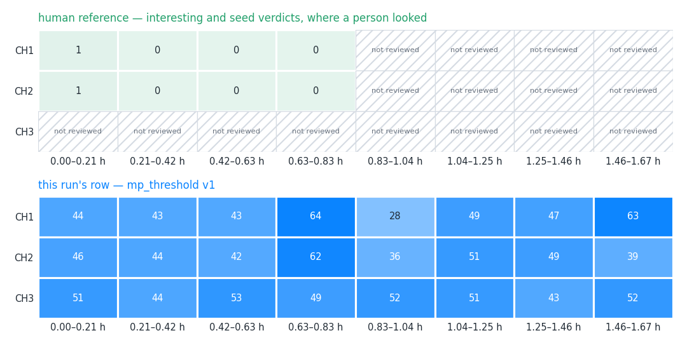
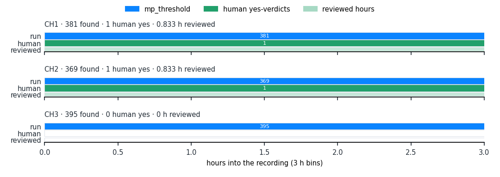
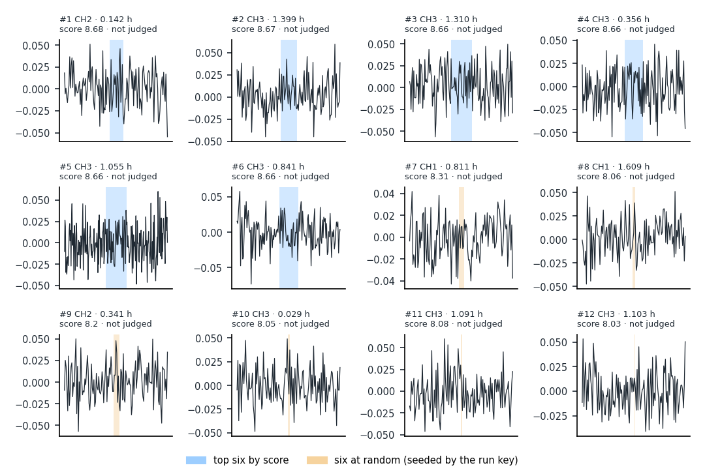
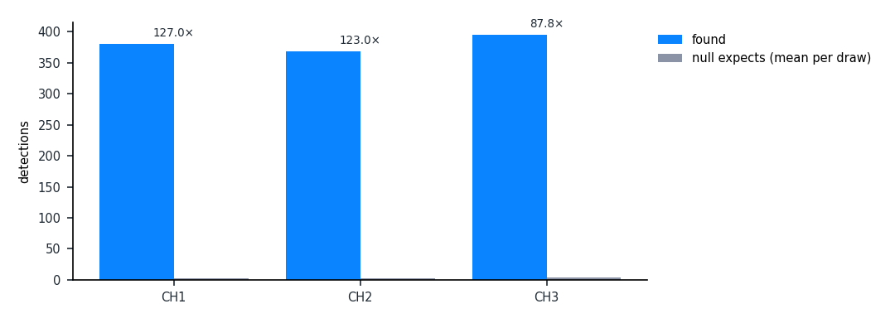

What a detection algorithm found in this recording, side by side with what a person marked by hand. Think of a spell-checker run over a book a proof-reader has partly read: the map shows which pages each of them covered, the scoreboard counts where they agree on the pages both read, the strip shows where in the book the checker flagged most, and twelve example flags let you judge them by eye. The null comparison says how many flags the checker would raise on scrambled text of the same kind (chance level); the last section records everything needed to run it again.
1. Detection map

Discovery › Map, syn.mat, 8 equal time slices.
human reference — interesting and seed verdicts, where a person looked
channel
0.00–0.21 h
0.21–0.42 h
0.42–0.63 h
0.63–0.83 h
0.83–1.04 h
1.04–1.25 h
1.25–1.46 h
1.46–1.67 h
CH1
1 in 0.208 h
0 in 0.208 h
0 in 0.208 h
0 in 0.208 h
not reviewed
not reviewed
not reviewed
not reviewed
CH2
1 in 0.208 h
0 in 0.208 h
0 in 0.208 h
0 in 0.208 h
not reviewed
not reviewed
not reviewed
not reviewed
CH3
not reviewed
not reviewed
not reviewed
not reviewed
not reviewed
not reviewed
not reviewed
not reviewed
this run's row — mp_threshold v1
channel
0.00–0.21 h
0.21–0.42 h
0.42–0.63 h
0.63–0.83 h
0.83–1.04 h
1.04–1.25 h
1.25–1.46 h
1.46–1.67 h
CH1
44 in 0.208 h
43 in 0.208 h
43 in 0.208 h
64 in 0.208 h
28 in 0.208 h
49 in 0.208 h
47 in 0.208 h
63 in 0.208 h
CH2
46 in 0.208 h
44 in 0.208 h
42 in 0.208 h
62 in 0.208 h
36 in 0.208 h
51 in 0.208 h
49 in 0.208 h
39 in 0.208 h
CH3
51 in 0.208 h
44 in 0.208 h
53 in 0.208 h
49 in 0.208 h
52 in 0.208 h
51 in 0.208 h
43 in 0.208 h
52 in 0.208 h
A covered cell gives the count of detections (human row: interesting and seed verdicts) and the hours covered in that slice. 'not run' means no run of this algorithm reached the slice; 'not reviewed' means nobody looked there — not the same as looking and finding nothing.
The run's row is the Map page's row for this algorithm: coverage is the union of every live run of the same steps, each slice counted from the newest run that covers it.
2. Scoreboard against the human reference
channel
found
already judged
reviewed
interesting
precision
recall · reviewed overlap
null expects / draws
× null
total
1145
0
0
0
containment — nothing judged · extent 0 % (0/11)
0.00 over 1.667 h
10.5 / 2 draws
109.0×
CH1
381
0
0
0
containment — nothing judged · extent 0 % (0/6)
0.00 over 0.833 h
3 / 2 draws
127.0×
CH2
369
0
0
0
containment — nothing judged · extent 0 % (0/5)
0.00 over 0.833 h
3 / 2 draws
123.0×
CH3
395
0
0
0
not yet scored
no reviewed overlap
4.5 / 2 draws
87.8×
found — detections this run made on the channel, inside the section.
already judged — detections that already carried a human verdict before the run started.
reviewed — detections a human verdict covers, by the rule below.
interesting — the reviewed detections whose covering verdict is a yes (interesting or seed).
precision — containment: interesting ÷ reviewed, with yes/judged beside it; extent: the share whose extent agrees with an event-shaped human row under the matching rule. Precision alone rewards timidity.
recall · reviewed overlap — the share of the human yes-verdicts the run found, over the channel's reviewed hours; the total row states the hours it pooled.
null expects / draws — the mean count the paired surrogate (null) runs found on the same scope, over the number of draws per channel.
× null — found ÷ null expects. A null that found nothing leaves it empty: there is no ratio to take.
Reviewed means: a human verdict covers the detection: a verdict given on it in Review, or reviewed windows that wholly contain it and agree (Q-D2 (a), Q41's rule).
Matching rule (a detection and a human span are the same event): criterion reciprocal_iou_onset, iou 0.5, onset 0.25.
The total pools 1.667 reviewed hours.
3. Where the run fires

Detections per 3 h bin per channel (blue), the human yes-verdicts in the same bins (green), over the reviewed hours (pale underlay).
4. Twelve example detections

The six best by score (highest score) and six at random, seeded by the run key so a re-render shows the same six. The band is the detection's span; the verdict is a human one, if it has one.
#
pick
channel
at (h)
duration (s)
score
verdict
detection id
1
top
CH2
0.1417
18
8.683
not judged
420
2
top
CH3
1.3992
22
8.672
not judged
1089
3
top
CH3
1.3103
30
8.664
not judged
1073
4
top
CH3
0.3556
26
8.664
not judged
849
5
top
CH3
1.0547
44
8.662
not judged
1017
6
top
CH3
0.8414
27
8.661
not judged
962
7
random
CH1
0.8108
7
8.306
not judged
188
8
random
CH1
1.6094
3
8.057
not judged
374
9
random
CH2
0.3406
7
8.2
not judged
462
10
random
CH3
0.0294
2
8.046
not judged
774
11
random
CH3
1.0908
2
8.08
not judged
1024
12
random
CH3
1.1031
1
8.032
not judged
1028
5. Null comparison

Per channel, what the run found beside what its null expects by chance.
channel
found
null expects / draws
× null
CH1
381
3 / 2 draws
127.0×
CH2
369
3 / 2 draws
123.0×
CH3
395
4.5 / 2 draws
87.8×
Null: paired surrogate runs drawn with the run; method phase_randomize; 2 draws per channel.
C:\Users\mmebr\AppData\Local\Temp\claude\C--Users-mmebr-Documents-CNN\3e66d3d6-b22e-4b0c-a877-b178d922f81f\scratchpad\bridge1\reports\db\annotations.sqlite (read from the sandbox copy C:\Users\mmebr\AppData\Local\Temp\claude\C--Users-mmebr-Documents-CNN\3e66d3d6-b22e-4b0c-a877-b178d922f81f\scratchpad\bridge1\reports\runtime\20261019-reports\annotations.sqlite)
code commit
75f2e764483a794ec5270ab74c6a97d9779788c5
rendered
2026-10-18T23:23:32+00:00
account
mmebr
#
block
parameters
1
preprocessing.detrend
{"mode": "rolling_mean", "window_s": 600.0}
2
detection.matrix_profile
{"backend": "stump", "window_min": 1.0}
3
detection.threshold
{"threshold": 8.0}
Every step parameter is the run's own recipe, as executed.